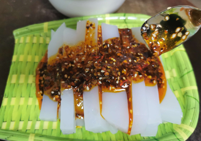

确山凉粉
凉粉这种小吃以其低廉可口的特点流传下来，并加以发扬成凉皮，梗皮，凉面等多个品种，成为确山街头一道古老、悠远而亲切的风景。凉粉作为一种地方特色小吃在确山延续了上千年。由于其独特的制作工艺，绝佳的风味，一直以来，深受广大食客的喜爱。如今，已经成为享誉豫南的地方名吃了。据清康熙年间的乡土志记载：“豫中驿城之南，有一地盛产豌豆之凉粉，色若琥珀，口感爽滑，弹性适中，食之有清热、驱火、凉血之功效。”据说这确山豌豆凉粉用料特别讲究，一般的豌豆是不用的，只用确山杨店、顺山店一带所特产的铁豌豆，俗名药豌豆。这药豌豆，种植不易、产量又低，所以格外得金贵。其豆形如绿豆大小，色泽黝黑，质地坚硬，内质坚如铁，硬若石。存放起来老鼠不咬，虫子不叮。

 见河南，大美确山
见河南，大美确山